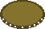

Kyo
Kyo is a board game inspired by Chess. It was initally just used as an alternative name for Chess in a fantasy universe, but it slowly developed into a game in its own right. This is a browser-based implementation of the game.
If you find something broken, or just anything that doesn't seem to be quite right, both with the game and with this ruleset, please open a ticket on GitHub.
Rules
Kyo is played on a 10 by 10 checkered board, and the game is won by either capturing the enemy King or destroying all the enemy's Mana. There are two types of pieces in Kyo, which each have several subtypes:
Pawns
- There are five basic pawn types in Kyo:
- The Light Pawn (8 per player)
- The Heavy Pawn (8 per player)
- The Tower (2 per player)
- The Queen (1 per player)
- The King (1 per player)
- As well as two additional pawn types that can optionally be played with:
- The Cannon (2 per player)
- The Knight (2 per player)
- There are five basic pawn types in Kyo:
Chips
- Mana:
- Light Mana Chips (13 per player)
- Dark Mana Chips (13 per player)
- Shield Chips (8 per player)
- Mana:
Chips can be stacked together on the same board tile, and one pawn may be placed on top of a stack of chips. Collectively, all chips and/or pawns on a tile are referred to as a "Stack".
When making a move, the player may pick up the pawn, if present, as well as any friendly chips from the top of the stack and make a move with these. This selection of picked-up chips and/or a pawn is called a stack slice. If no pawn is present, the player may pick up any number of the chips on the tile. If a Light Pawn is present, the player may not pick up any chips, and if any other type of pawn is present, the player may pick up a maximum of five chips.
There are four basic types of moves:
"Direct" Moves
- The piece(s) move one step in any direction, including diagonally.
- Making a direct move always ends your turn (except for Towers, which may always choose to make deploy moves at the end of their turn).
- The whole stack slice can make a direct move together. A direct move can also be made with just the pawn on top of a stack slice, or with just the chips under the pawn, leaving the pawn behind.
"Mana" Moves
- If the player leaves behind a Mana chip of the correct color after making a move (Dark Mana for orthogonal moves, Light Mana for diagonal moves), this qualifies as a Mana move.
- After any Mana move, the player may choose to make another Mana move, if a legal Mana move is avaiable.
- The player may not choose to make a direct move following a Mana move.
- Only the Queen may make shuffle moves after a Mana move.
- Only the Tower may make deploy moves after a Mana move.
"Shuffle" Moves
- The player may choose to reshuffle the chips in the currently lifted stack slice.
- A shuffle move must never end with a Shield chip being placed underneath any Mana chip. Any such move is illegal.
- Making a shuffle move ends your turn, except for the Queen, which may make any number of shuffle moves at any time.
"Deploy" Moves
- If a pawn has an undeployed Shield chip beneath it, it may choose to deploy that shield onto any adjacent tile, including diagonally.
- More than one shield may be deployed at once.
- For any pawn except the Tower, a deploy move is equivalent to making a direct move with a stack slice containing the shield, meaning the turn ends.
- Towers, however, may make deploy moves at any time without ending their turn.
Pawns
Light Pawn
The Light Pawn (or just the Pawn) is the basic footsoldier of Kyo. They are the only pawns that cannot use Mana in any way, and they are also the only pawns that cannot always capture:
the Light Pawn can only attack if it "outnumbers" the enemy it wants to attack (unless it is simply moving onto a stack of enemy Mana). This means that there needs to be more friendly stacks adjacent to the enemy pawn than there are enemy stacks surrounding the attacking light pawn.
Some examples:
- The attacking gold pawn and the defending red pawn are adjacent to each other, but no gold pawns are adjacent to the red pawn, and vice versa. This means they are evenly matched, and neither can attack the other.
- In this example, the red pawn has two gold pawns adjacent to it, but the gold pawn only has one red pawn adjacent to it. So in this instance, the gold pawn outnumbers the red pawn and can attack it, while the red pawn cannot attack.
- Here, gold has two pawns adjacent to the the target red pawn, but red has one pawn and one Mana chip next to the attacking gold pawn. This would prevent the gold pawn from attacking the red pawn. Note that the gold pawn would still be able to capture the red Mana chip, as the outnumbering requirement does not apply when attacking Mana.
Heavy Pawn
The Heavy Pawn (or just the "Heavy") is arguably the most useful pawn in all of Kyo. It doesn't have the limitations of the Light Pawn, being able to pick up to five Mana chips and attack whereever it can move. Each Heavy Pawn also starts with three Mana chips beneath it - whether those chips are Light or Dark Mana depends on where the pawn starts:
Tower
The Tower has the unique ability of being able to move onto deployed Shield tokens, allowing them to both relocate your own defenses as well as disable the enemy's defenses. They are also the only pawn that can Deploy Shields without automatically ending their turn. Towers start with two Shields each.
Queen

The Queen is the most versitile, and arguably the most powerful pawn in Kyo. Like other pawns, it can interact with Mana - but uniquely, it can Reshuffle its stack at any time, and as many times as it wants. This allows it to completely reconfigure Mana roads it passes over, making it very hard for the enemy to predict where it will strike. The Queen starts with one Dark Mana, one Light Mana, and a Shield.
King

The primary objective of Kyo is to capture the enemy king. The King has no special powers, but it does start with three Shields, more than any other pawn. Unlike Towers, though, it cannot reclaim its shields after deploying them.
Mana
Each player has Dark and Light Mana chips.

Pawns moving over Mana (making a "Mana" move) obey the following rules:
- The top Mana chip left behind after a pawn makes a move decides what type of Mana move to make:
- If a Dark Mana chip was left behind, the move must be orthogonal.
- If a Light Mana chip was left behind, the move must be diagonal.
- In the following example, the pawn starts by making a move straight up, leaving a Dark Mana chip behind. It then makes two consecutive moves diagonally up and to the right, leaving a Light Mana chip behind each time.
- When making multiple moves across Mana chips of the same color, the pawn may not change direction. When changing colors, the pawn may pick a new direction.
- These moves are legal:
- These are not:
- These moves are legal:
- Pawns are allowed to use enemy Mana, they just can't pick them up:
- In this example, the red pawn makes three Mana moves, all one step up and to the left. For the first and third moves, it leaves one of its Light Mana chips behind, but for the second move it does not need to leave any of its own chips behind, as a gold Light Mana chip is already on that tile.
- In this example, the red pawn wants to move three steps up to the top corner, but it is unable to pick up gold's Light Mana and can't reach all the way. It isn't able to pick up its own Light Mana either, as the gold chip is covering it.
- In this example, the red pawn makes three Mana moves, all one step up and to the left. For the first and third moves, it leaves one of its Light Mana chips behind, but for the second move it does not need to leave any of its own chips behind, as a gold Light Mana chip is already on that tile.